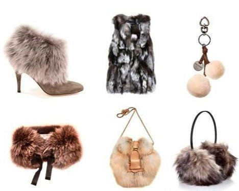
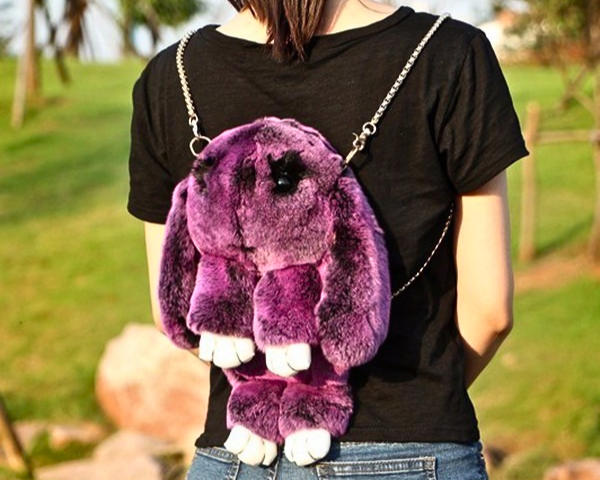

Fur and rabbit meat and the truth about it
There is a common misconception that rabbit fur is a "by-product" of the meat industry. In fact, every year, tens of millions of rabbits are reared on fur farms in cramped, dark, dirty cages, where they spend their entire short lives on a wire floor that cuts their paws.
Thousands of rabbits, intensively raised on agro-farms, spend 8 to 9 months in cages, after which they are slaughtered for meat and fur.
|
These beautiful animals are then brutally slaughtered in order to use their fur to make fur coats (30-40 rabbits will be needed for one fur coat) or to decorate coats, jackets, shoes, scarves and gloves. |
Most of this fur is used in the manufacture of fur coats, boots, hats, gloves, as well as edges and linings for fashionable clothes and accessories. |
Rabbit fur is also used for the production of children's toys(!), stuffed animals, jewelry, key chains, toys for domestic cats and dogs, blankets and other household items and fashion accessories. |
|---|---|---|
|  |  |
Rabbits are also brutally tortured and killed in the testing of medicines, cosmetics, household chemicals, etc.
Rabbit fur has another hidden side that many people don't know about. You can have things made from so-called "natural" fur and not even know about it. Rabbit fur is used to make children's toys, key chains and other trinkets.
In many parts of the world, cat owners and cat shelters have mouse toys that can be made from rabbit fur. These toys are made in China and are usually not labeled as being made from animal fur.